“UM MAGNÍFICO E SANTO HOMEM”
CAPÍTULO GERAL DE NARBONE
Boaventura sempre
se manteve firme na sua administração, primordialmente no Capítulo Geral de Narbone
na França, em 1260, onde coletou as diversas Legislações 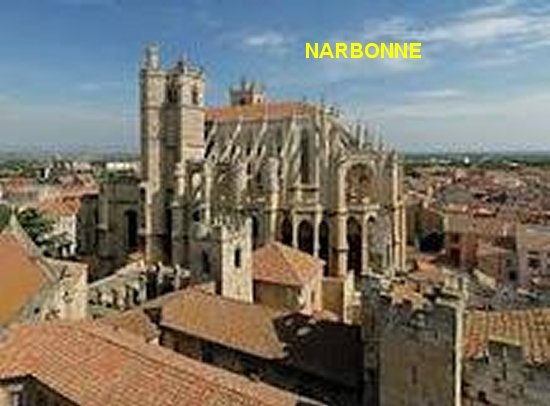
Neste mesmo Capitulo Geral de Pisa, São Boaventura também redesenhou o mapa das Províncias da Ordem, além de prescrever o toque dos sinos ao entardecer, em homenagem a “Anunciação do ANJO” a SANTÍSSIMA VIRGEM MARIA, prática que prefigurou a “Oração do Ângelus”.
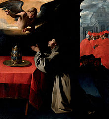
ARCEBISPO DE YORK
Em 24 de novembro de 1265, o Papa Clemente IV nomeou Frei Boaventura para Arcebispo de York, na Inglaterra. O país não era desconhecido dele, porque inclusive já tinha estado lá como visitante apostólico. Todavia em York, a Igreja estava dilacerada por dissensões. Sem dúvida, com esta realidade, o Papa sentia-se feliz por poder enviar para lá um homem sábio de maneiras irrepreensíveis, firme e amável, de quem se esperava que ele reconciliasse todas as partes presentes. Boaventura estava em Paris quando recebeu a comunicação do Papa, e por isso, partiu imediatamente para a Itália, apesar de ser inverno, a fim de suplicar ao Papa que não o enviasse para aquela Missão, neste exato momento, em que os compromissos e trabalhos na Ordem eram tão intensos. Seus argumentos não surtiram total efeito, mas teve um efeito suspensivo. Na verdade o Papa utilizou-o em outros serviços necessários. Afinal, sua grande atividade, a prudência do seu governo, seu zelo reformista e as grandes obras que operava chamavam a atenção e evidenciavam a sua perfeita responsabilidade na Administração Franciscana.
A VIDA DE SÃO FRANCISCO
No ano seguinte, aconteceu um Capítulo Geral Franciscano em Paris, que ordenou a destruição de todos os livros com A Vida de São Francisco de Assis, evidentemente com exceção daquele livro escrito por ele mesmo, por Frei Boaventura (Legenda Maior), porque foi a única obra declarada autêntica e confiável.
IRMANDADE DE PENITENTES
Em 1267, em Roma, ele criou um estatuto para os leigos agindo de acordo com as regras do Amor de CRISTO: é a primeira Irmandade de Penitentes que surgiu, a qual ele chama de “Irmandade dos Gonfalon”, cujo objetivo é o Amor de CRISTO e a proclamação da Fé Católica.
CONCLAVE EM
VITERBO 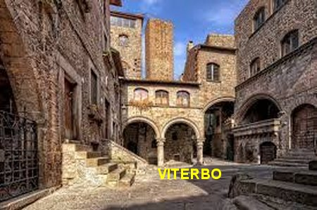
Reunidos em Viterbo para dar um sucessor ao falecido Papa Clemente IV, os Cardeais não chegavam a um acordo, apesar de estarem reunidos há três anos e em sérias discussões, buscando a concordância, principalmente por causa das intervenções de políticos interessados. Foi então que decidiram convidar Frei Boaventura para apreciar os fatos e emitir a sua sugestão. Ele aceitou e passou pela cidade na data combinada, em 1271. Seu Conselho aos Cardeais é uma perfeita e apurada pregação, na qual evidencia os deveres dos Cardeais para com a Igreja e faz do meio-tom (observância, discrição e firmeza de caráter) o retrato do “Papa ideal”.Graças a esse lembrete e preciosa luz, o Cardeal Theobald Visconti, que então era legado na Síria, foi o escolhido, e eleito pela grande maioria. O novo Papa usou o nome de Gregório X. Na continuidade, depois da posse, o novo Papa pediu ao Ministro Geral dos Franciscanos (Frei Boaventura) que lhe desse quatro Irmãos para serem os embaixadores do Vaticano no Oriente, a fim de negociarem lá com os gregos, a união da Igreja Grega com a Igreja Latina.
CARDEAL-BISPO DA DIOCESE DE ALBANO LAZIALE
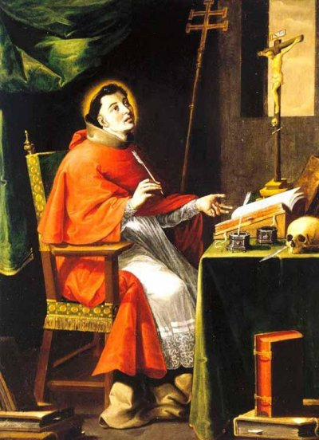
Em 1272, Frei Boaventura ministrou na Universidade de Paris uma série de palestras intituladas “Hexaemeron”, que é uma explicação alegórica dos seis dias da criação do Universo Divino. Mas em 3 de junho de 1273, o Papa Gregório X, em agradecimento por sua atuação firme e sincera durante o Conclave em Viterbo, chamou-o para junto de si, a fim de contar com seu valioso auxílio na solução de relevantes problemas da Santa Igreja, e por isso mesmo, o Consagrou Bispo de Albano e depois o nomeou Cardeal.
O Santo Padre carinhosamente enviou legados a presença de Frei Boaventura para lhe entregar o chapéu Cardinalício. Ele se encontrava no Convento de Mugello, próximo a Florença. Os legados do Papa chegaram num horário após o almoço da Comunidade Religiosa, quando Boaventura humildemente lavava a louça usada na refeição em companhia de novatos da Comunidade. Então pediu aos mensageiros do Papa que colocassem em um galho da árvore no quintal, o chapéu que ele não poderia pegar e recebê-lo adequadamente naquele momento. Terminada sua humilde tarefa, depois de pegar o Chapéu de Cardeal na árvore, foi se juntar aos enviados do Papa, a quem se desculpou mais uma vez e devolveu as honras devido à sua posição.
Como Cardeal, seu mais importante encargo, foi a preparação de um grande acontecimento eclesial no ano 1274, ou seja, o II Concílio Ecumênico de Lyon, com o objetivo de restabelecer a comunhão entre a Igreja Latina e a Igreja Grega. O Sumo Pontífice o indicou para Presidente do Concílio.
II CONCÍLIO DE
LYON 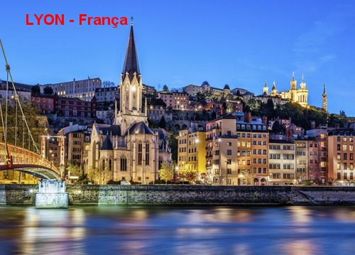
Assim ano seguinte, em 1274, Frei Boaventura deixou o cargo de Ministro Geral da Ordem Franciscana, e Indicou para substituí-lo o franciscano Jerome d'Ascoli, futuro Papa Nicolau IV (1288-1292). Em seguida, o Papa Gregório X, mandou que ele preparasse o II Concílio de Lyon, porque ele queria restaurar a união das Igrejas que estavam separadas desde 1054. Boaventura com respeito e atenção preparou tudo para o II Concílio Geral de Lyons a ser realizado a partir do dia 7 de maio de 1274.
Santo Tomás de Aquino, grande amigo de Boaventura, foi convidado pelo Papa Gregório X a participar do Concílio, mas faleceu durante a viagem, com apenas 49 anos de idade, no dia 7 de Março de 1274.
Durante o Concílio, Boaventura falou aos Padres Conciliares, inicialmente para dar as boas-vindas à Delegação Bizantina e aproveitou para recomendar o empenho de todos na União das Igrejas Latina e Grega. Durante todas as reuniões, ele animou os debates do Concílio, sempre propondo idéias e buscando soluções para os temas mais obscuros. No dia 6 de julho, na quarta sessão, os representantes do Imperador grego Michael Palaeologus concordaram em assinar uma profissão de fé reconhecendo a “primazia do Papa”, a inserção do Filioque no Credo”(ou seja, o ESPÍRITO SANTO procede do PAI e do FILHO), a “existência do Purgatório” e a “instituição dos Sete Sacramentos por JESUS". E também, a Santa Igreja Romana é reconhecida, e tem o primado, a autoridade soberana e inteira sobre a Igreja Católica. Ela com plena sinceridade e humildemente, reconhece ter recebido com plenitude de poder, do próprio SENHOR JESUS, na pessoa de São Pedro, cabeça dos Apóstolos, de quem o Romano Pontífice é o sucessor. E como deve, acima de tudo, defender a verdade da fé, as questões que surgem da fé devem ser definidas por seu julgamento... A ela estão sujeitas todas as Igrejas, cujos prelados prestam obediência e reverência”. Estes foram os principais assuntos do Concílio e todos os participantes estavam praticamente de acordo, conscientes da união das Duas Igrejas.
MORTE MISTERIOSA
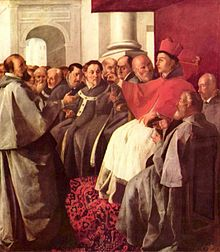
Infelizmente, o Concílio com os gregos, realizado com tanto carinho e empenho, não pode ser concluído. No dia seguinte as grandes definições do Concílio, Boaventura ficou gravemente doente. Ninguém conseguiu entender o que aconteceu. Vieram os médicos e o examinaram diversas vezes, em vão. Morreu na noite de 13 Julho de 1274 durante a sessão do dia. São Boaventura tinha apenas 53 anos de idade. O Santo Padre Papa Gregório X, triste, aborrecido e preocupado, se apressou em ministrar-lhe os últimos Sacramentos.
Segundo o seu secretário, Peregrine de Bologna, o Frei Boaventura era um homem forte e estava cheio de disposição para ajudar na concretização da plena união entre as Igrejas, Latina e Grega. E disse com convicção: "Uma mão criminosa envenenou uma xícara cujo conteúdo levou ao túmulo o ilustre campeão da Igreja". (Enciclopédia Católica)
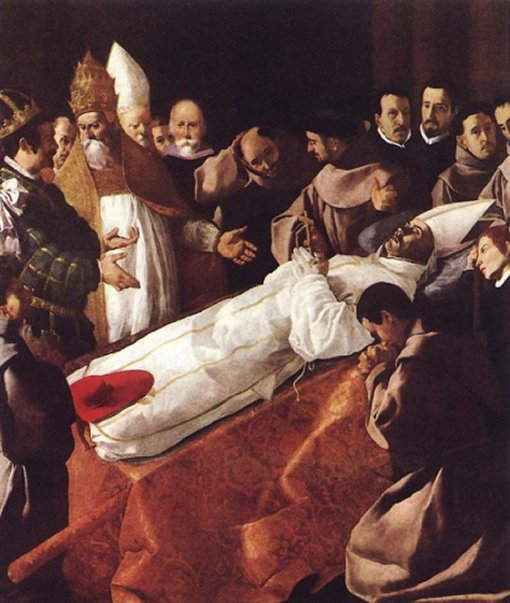
SEPULTAMENTO
São Boaventura foi enterrado na Igreja Franciscana daquela cidade de Lyon, em uma grande cerimônia. Hoje esta Igreja tem o nome dele: Église de Saint-Bonaventure. A Oração fúnebre foi pronunciada por seu amigo, o dominicano Pierre de Tarantaise.
Quando em 1434, os seus restos mortais foram transferidos para uma nova Igreja dedicada a São Francisco de Assis, a tumba foi aberta. Sua cabeça foi encontrada em perfeito estado de preservação, o que favoreceu em muito a causa da sua Canonização no dia 14 de abril de 1482, pelo Papa Franciscano Sisto IV (1471-1492). Boaventura foi proclamado Doutor da Igreja em 1587 pelo Papa Franciscano Sisto V (1585-1590).
A mencionada Igreja se transformou em SANTUÁRIO DE SÃO BOAVENTURA - LYON - FRANÇA.
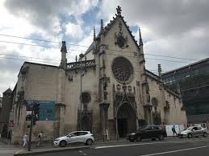
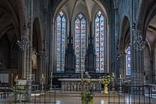
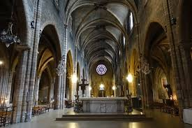
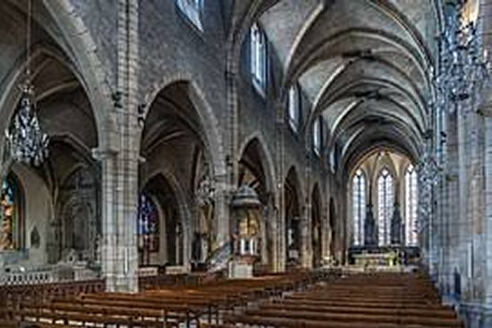